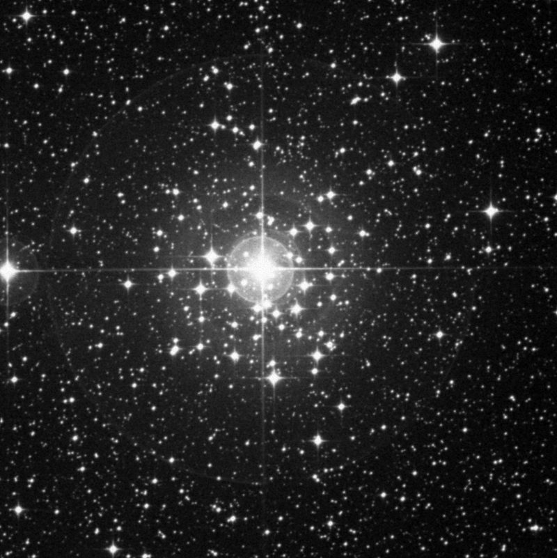

Deep Sky Notes
☰
Articles
Observing Notes ▾
Master Table
Browse by Constellation
Published
About
Catalogue
›
Constellations
›
CanisMajor
CanisMajor
2 objects in the catalogue
NGC 2354 (OC)
Open Cluster
Mag 6.5 | Size 20.0′

NGC 2362 (OC)
Open Cluster
Mag 4.1 | Size 8.0′